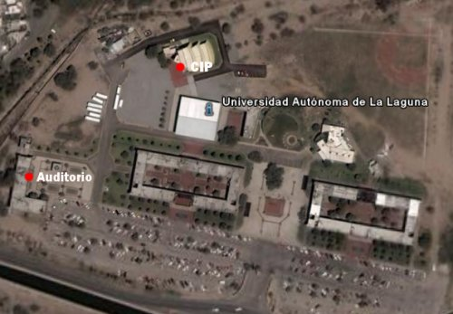

FLISOL 2008
Por guivaloz, 2008-04-30 12:40
{kind=link}
El pasado Sábado 26 de Abril del 2008, se llevó acabo el FLISOL (Festival Latinoamericano de Instalación de Software Libre), el cual fué organizado por segundo año consecutivo por el Grupo de Usuarios de GNU/Linux de la Laguna y con una asistencia de más de 50 personas.
La primer plática fué por parte de José Antonio Martínez Torres con el tema Introducción al Software Libre. Seguido por Guillermo Valdez Lozano con Que se puede hacer con el Software Libre.


 |
|
| Introducción al S.L. | Que se puede hacer con el S.L. |
Se instaló GNU/Linux en más de 20 equipos, siendo la distribución más instalada Ubuntu 8.04.


Como es tradición, se preparó una riquísima discada que disfrutaron todos los asistentes.


A continución la información de promoción del evento…
¿Qué es el FLISOL?
{kind=link}
El FLISOL (Festival Latinoamericano de Instalación de Software Libre) es el evento de difusión de Software Libre más grande en Latinoamérica. Se realiza desde el año 2005 y su principal objetivo es promover el uso del software libre, dando a conocer al público en general su filosofía, alcances, avances y desarrollo.
Para tal fin, las diversas comunidades locales de software libre (en cada país, en cada ciudad/localidad), organizan simultáneamente eventos en los que se instala de manera gratuita y totalmente legal, software libre en las computadoras que llevan los asistentes.
Además, se ofrecen charlas, ponencias y talleres, en torno al software libre.
El FLISOL 2008 se efectuará el día sábado 26 de abril en las instalaciones de la Universidad Autónoma de La Laguna (UAL).
Las pláticas se celebrarán en el Auditorio de la Universidad y el taller de instalación en el CIP (vea el siguiente mapa).

El programa del evento iniciará con las siguientes pláticas en el auditorio:
- 10:00 Introducción al Software Libre por J. Antonio Martínez Torres
- 11:00 ¿Qué se puede hacer con el Software Libre? por Guillermo Valdez Lozano
Para continuar terminando las charlas en el CIP con el taller de instalación.
¿Quién organiza el evento?
La Comunidad de Software Libre en Latinoamérica, en el caso particular de La Laguna lo hace el Grupo de Usuarios de GNU/Linux de La Laguna (GULAG) conformado por personas de diversa índole, con el apoyo de otras entidades, principalmente educativas, y algunos patrocinadores del evento.
¿A quién esta dirigido el evento?
El evento está dirigido a todo público: estudiantes, académicos, trabajadores, entusiastas y aun personas que no poseen mucho conocimiento informático.
Si posees o no conocimientos e intereses en informática, licencias, derecho de autor/copyright y demás áreas de la ciencia y la tecnología, déjate tentar, asiste y participa del evento. Nuestro objetivo es compartir conocimientos y ansias de libertad.
¿Cuánto cuesta participar el evento?
La asistencia al evento es totalmente libre y gratuita.
¿Qué beneficios obtengo al asistir?
Tendrás la oportunidad de instalar software libre en tu computadora, apreciar qué es una real y segura alternativa a otros modelos de desarrollo y distribución de software, informarte sobre la filosofía, cultura y organización alrededor del mismo.
Tal vez encuentres una alternativa/solución en software libre para ti, tu empresa, colegio, universidad e, incluso, para tu gobierno. Podrás aclarar tus dudas acerca de los temas relacionados y, quizás encuentres en el software libre, una alternativa de investigación, empleo y desarrollo tecnológico.
¿Qué necesito llevar para la instalación?
- Tu equipo de cómputo, ya sea desktop o laptop, recomendamos que antes hagas una copia de seguridad de tu información (importante no nos hacenos responsables de la pérdida de información) y defragmentes tu disco duro.
- Es importante para los organizadores conocer cuántos equipos se llevaran al evento, por ese motivo te solicitamos que confirmes tu participación vía correo electrónico a la dirección: flisol (arroba) gulag.org.mx
- En la sede tendremos disponibles las distribuciones Debian, Ubuntu, Fedora, Mandriva y Slackware. Si deseas alguna distribución en especial favor de traerla contigo.
- Lleva CD’s o DVD’s vírgenes para que te lleves a tu casa los discos de la distribución que se te haya instalado.
- ¡Deseos de aprender!
Quiero ayudar ¿qué puedo hacer?
Hay varias opciones para colaborar, contacta con nuestro coordinador local y ofrece tu apoyo en alguno de estos puntos:
- Difusión
- Patrocinio
- Como Instalador
Coordinador: César Eduardo Espino Quirarte
mail de contacto: cespinoq (arroba) gmail.com
¡Gracias por el interés y esperamos verlos en el FLISOL!